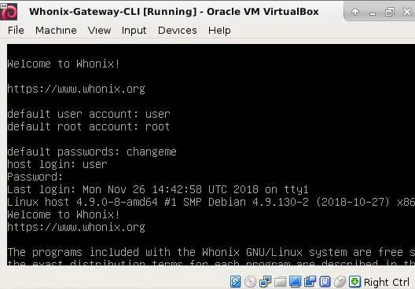

We believe security software like Whonix needs to remain Open Source and independent. Would you help sustain and grow the project? Learn more about our 14 year success story and maybe DONATE!
MAC AddressDocumentationReporting BugsPrevious page: MAC AddressIndex page: DocumentationNext page: Reporting BugsWhonix RAM System Requirements and Advice for Systems with Low RAM

How much RAM does Whonix need? 8 GB of RAM would be ideal for best usability and performance when running Whonix. However, Whonix can also be used with a lot less RAM. 4 GB of RAM is enough.
This wiki page provides advice on how to reduce RAM usage when using low-end systems with Whonix, such as those with 4 GB of RAM or less. It includes instructions for reducing RAM and VRAM assignments, running Whonix-Gateway™ in CLI mode, and using graphical administration mode.
Introduction
Whonix command line interface (CLI) is normally recommended for advanced users only. However, it is possible to reduce the RAM and VRAM (video RAM) assignment of Whonix-Gateway without requiring any other configuration changes such as package uninstallation or configuration file modifications.
It is important to note that more RAM is required for upgrades.
Whonix-Gateway can function with as little as 512 MB of RAM, but resource-intensive operations like upgrades can cause the virtual machine to freeze. [1]
Assigning less than 768 MB of RAM to a Whonix VM will result in RAM Adjusted Desktop Starter launching the command line interface (CLI) only, without LXQt graphical user interface (GUI).
Users with 4 GB of RAM or less can temporarily assign 512 MB of RAM to Whonix-Gateway. This is sufficient for the normal operation of Whonix-Gateway serving Whonix-Workstation™. This process is described in detail below.
Whonix RAM and VRAM Defaults

GUI

- Whonix LXQt:
- Whonix-Gateway LXQt - 1280 MB RAM and 128 MB VRAM.
- Whonix-Workstation LXQt - 2048 MB RAM and 128 MB VRAM.

CLI

- Whonix CLI:
- Whonix-Gateway CLI - 512 MB RAM and 16 MB VRAM.
- Whonix-Workstation CLI - 512 MB RAM and 16 MB VRAM.
Advice for Systems with Low RAM
swap-file-creator
 swap-file-creator was enabled by default up to version 17.
swap-file-creator was enabled by default up to version 17.
In version 18 (and above), to enable an unencrypted swap file using swap-file-creator, follow the instructions below.
sudo mkdir --parents /usr/local/etc/default/swap-file-creator.d/
append-once /usr/local/etc/default/swap-file-creator.d/50_user.conf DO_PRE_CHECK=no
Whonix-Gateway CLI RAM Saving Mode
Whonix-Gateway initial first boot setup:
- Run Whonix-Gateway LXQt normally.
- Do not start Whonix-Workstation if you are low on RAM.
- Complete the initial Whonix-Gateway setup.
- Perform the system upgrade.
- Then, you can enable Whonix-Gateway CLI RAM Saving Mode to save RAM.
To run Whonix-Gateway after its initial first boot setup or after upgrades:
- Shut down Whonix-Gateway.
- Allocate less RAM to Whonix-Gateway:
VirtualBox→click a VM→Settings→System→AdjustMemory slider to 512→Click:OK. - Assign less VRAM to Whonix-Gateway:
VirtualBox→click a VM→Settings→Display→Adjustslider for Video Memory to 16→OK. - Restart Whonix-Gateway.
- Start Whonix-Workstation.
- Whonix-Gateway is now serving Whonix-Workstation but operating with less RAM.
- To reconfigure or upgrade Whonix-Gateway later, use Whonix-Gateway Graphical Administration Mode as documented below.
Whonix-Gateway Graphical Administration Mode
Follow these steps in order to upgrade Whonix or change Tor settings:
- Shut down all VMs.
- Allocate default RAM to Whonix-Gateway. (Increase Virtual Machine RAM)
- Allocate default VRAM to Whonix-Gateway.
- Start Whonix-Gateway.
- The user will now have access to a graphical interface of Whonix-Gateway with LXQt.
- Perform administrative tasks such as upgrades and/or changing Tor settings.
- Shut down Whonix-Gateway.
- Apply RAM Saving Mode as described above.
Done. The user has successfully upgraded or changed settings using a graphical interface of Whonix-Gateway with LXQt.
Whonix-Workstation CLI RAM Saving Mode
Whonix-Workstation CLI can be run with as little as 512 MB of RAM when the LXQt desktop environment is not used. However, resource-intensive operations like upgrades can cause the virtual machine to freeze.[1] It is recommended to allocate more RAM during upgrades.
Whonix-Workstation LXQt RAM Saving Mode
Whonix-Workstation LXQt can be run with as little as 768 MB of RAM. However, resource-intensive operations like upgrades can cause the virtual machine to freeze.[1] During upgrades, it is recommended to allocate more RAM, around 1280 MB, which should be more than sufficient. It is important to note that in this configuration, the VM might freeze due to low RAM, and certain applications, especially browsers like Tor Browser, may experience reduced performance, particularly when numerous browser tabs are open simultaneously.
Alternatives
- RAM Saving Tips: Troubleshooting, Low RAM Issues
- Whonix-Gateway LXQt RAM Saving Mode: Whonix-Gateway LXQt can run with as little as 768 MB of RAM. However, resource-intensive operations like upgrades can cause the virtual machine to freeze.[1] For upgrading, you can increase the RAM/VRAM as described in the instructions for Whonix-Gateway Graphical Administration Mode.
- Whonix with CLI: Advanced users who are comfortable using Whonix with the command-line interface (CLI) can choose to permanently set this option.
- Experiments: Users can experiment with RAM assignments lower than 512 MB. We encourage you to share your results.
See Also
- Troubleshooting, Low RAM Issues
- RAM Adjusted Desktop Starter
- System Requirements
- Platform-specific Desktop Tips
- Tuning
Footnotes
- For instance, kernel package upgrades that rebuild the initrd.
Categories: Documentation